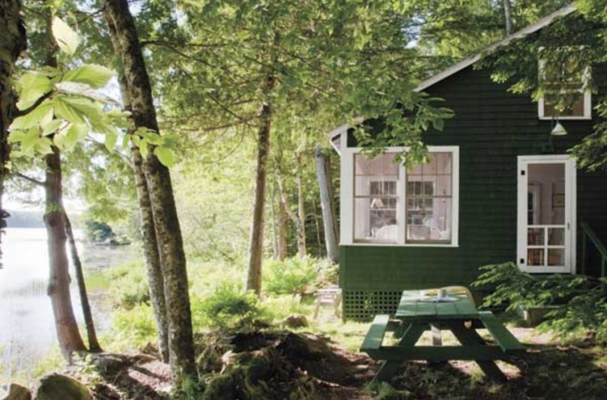
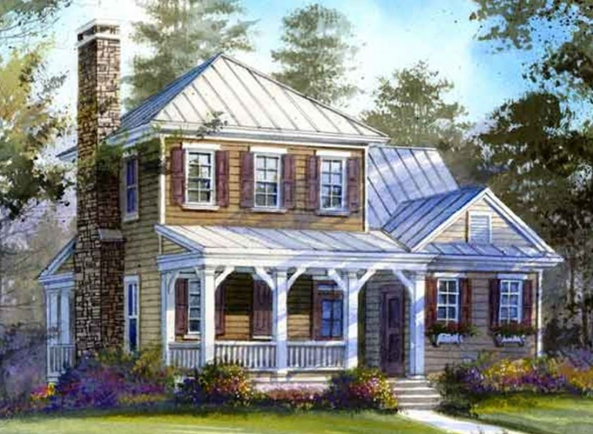
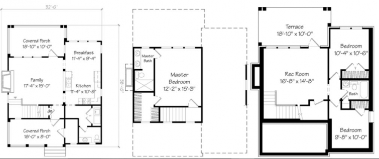

.png)
.PNG)
.PNG)
.PNG)
.PNG)
.PNG)
.JPG)
.JPG)
.PNG)
.PNG)



Well friends, a couple of months ago I caught the dreaded I-want-to-build-another-house disease. I knew it was likely to happen when I started thinking these thoughts:
- I want to live in a much smaller home with less furniture since our children have all moved away.
- I want to be able to clean our home in less time than the 2 full days it now requires to get it done.
- We need a smaller yard. My husband has spent most of his summer watering and mowing ours.
- I believe I have reached the point where there is not much more I can/want to do to this house in terms of decorating. (Although I have one room that has been redone that I want to show you soon.) So it seems a waste of time, money, and energy to redecorate it. (But of course, I can always work in the yard. 🙂 )

I also knew I wanted to build this new home on a piece of property with a lake view. So today we are just going to dream a bit. I started looking for plans that had the living room, dining room, and a porch at the back of the house. Southern Living’s Topwater Lodge has been my favorite so far in this dream (and yes, even though it has 3 floors, it would be downsizing from our current home.)

While we are dreaming, there are some changes I would like to make in this plan. First, that storage closet on the front porch would be better utilized as an interior space, and I have reworked that entire corner to have room for a built-in bed, a bath with a shower, and a space for a stacking washer and dryer. I know everyone says having a master bedroom upstairs is not a good idea, but the lot we are looking at is extremely narrow, and there would not be room for everything on one floor. At least with a built in bed on the main level, that would help if my husband or I could not climb the stairs later in life. The second change would be utilizing the basement rec room and one of the bedrooms as my husband’s workshop. (He wants to build canoes.) That would still leave one bedroom on the lower level for overnight guests (plus the one with the built in bed on the main level.) And finally, I would change the roofline from a hipped roof to a more traditional one.
In researching house plans, I found a home that has actually been built from the plan (but I could only find the exterior – no interior shots. 🙁 ) Here it is painted the same color as shown in the plan.

Spinnerbait Retreat is a plan that is almost identical to this one except there is additional space in the upstairs. Here is the downstairs layout for it, so you can see it is very much like it.
And even better, I found a house that is on the market that has been built from the plan – with interior shots! 🙂 So you can see the actual size of the rooms. Now remember, I am wanting to downsize, so yes, these spaces are small compared to our current rooms. Here is the living room:
Here is the kitchen in that plan:
And here is the back porch:
(If you would like to see more of the interior of that house, just click on the source link below the photos.)
Okay, now we have the layout. Let’s dream about the fun stuff – the details. 🙂 If we build this, I would like it to have a simple old lake house feel – almost vintage like. It would have a metal roof, and I would leave off the shutters. For the exterior color, I keep finding myself drawn to an old green paint that has been used for many years on lake houses and boat houses around Lake Rabun here in Georgia, like these…
I really like the dark green with the contrasting bright white. And did you notice that “x-style” railing on all the porches? That’s on my wishlist for this dream house too. 🙂
Along with open rafters on the ceiling.
And how about this for a front screen door?
In that small yard, near the dock, don’t you think we will need a fire pit with Adirondack chairs in dark green or maybe…red? 🙂
And that is the dream for the exterior of the lake house so far.
We have just returned from a few days at Disney World. With that, our humongous yard sale, and my touring plans completed for our Christmas Disney trip all checked off the to-do list, I am hoping that blogging will get back to a more frequent schedule. The next post will have the details for the interior inspiration for this dream lake house, and guess what – no buffalo checks!
But here is a sneak peek at what I am thinking…
Would love to hear your thoughts on it all. 🙂
Until next time…


.PNG)
Recognize that Hudson’s Bay blanket! Love them!
—————————————————————-
Me too! And have you seen the Pendleton National Parks things? The ones for Glacier National Park look very much like the Hudson Bay stripes except they have black in place of the navy in the Hudson Bay ones.
Kelly
Love your ideas; looking forward to seeing more. But, have you bought the teeny tiny lot you found on the lake?
——————————————————————-
Thank you for your comments on all the posts Linda. We have not purchased the lot. In fact, it has been taken off the market, so we are still looking (but we can’t put our house on the market until we get the exterior painted anyway.) Still in the dreaming stage here. 🙂
Kelly
I am loving your ideas, Kelly and building a smaller house that is exactly what you want sounds wonderful – having it on a lake would be a huge bonus! Can’t wait to see what you decide! Happy weekend ~
——————————————————————
Yes, it would be wonderful to build a dream home – a smaller one with easier upkeep. So glad you like the ideas! Happy weekend to you too!
Kelly
Best wishes on planning your new home! It’s such an exciting time for you and your husband. Your plans sound wonderful!
—————————————————————–
Thank you for your sweet words Lynne. If we can make it a reality, it will be exciting! Glad you liked the plans. 🙂
Kelly
The dreaming stage is the best stage! You get to think of all the cool things that you want in your home. Best of luck!
——————————————————————–
Thank you Katherine! Yes, the dreaming stage is a fun one!
Kelly
Love your plans and ideas for a lake house ♥ Have a great week ♥
——————————————————————-
Thank you for your kind words Summer. Hope you have a great week too. 🙂
Kelly
Kelly,
It’s a cute house but where’s the garage? And regarding the garage, I think it would be a good idea for it to be close to the kitchen with a door through the utility / laundry room into the garage. That way, carrying groceries & stuff in would be easy, and you could just sit them on the kitchen counter within a few steps of the garage. We’re looking at building a new house pretty soon too, and one thing my wife insists upon is having the master bedroom on the main floor. She wants it near the laundry room too. I really want a room that will be a combination of office & library, near the family room. I have tons of books, and I like to sit at a desk and draw stuff and look at internet stuff. And one more thing, I think you would find that dining area in that house plan would be way too small, if you ever have friends or family over for dinner. We like at least 13′ x 14′ for the dining room, especially at Thanksgiving and Christmas. Best wishes in getting your new house.
———————————————————————-
Hi John! We have had a garage with this house for 20 years, and all it does is house my husband’s workshop. Our cars have been parked outside the entire time, so I think it is safe to say we don’t really need one. (And our previous home did not have one.) I am planning on utilizing the basement space as the workshop, so that will be taken care of that way. I agree with you about the dining room being way too small in the plan. I had already planned to add an additional foot to both the length and width of it to increase its size. The small size of our current dining room makes me know I will need a larger space in the next house. Thank you for your input!
Kelly
My dream is sit on the front porch of a house by the lake anytime I want. I want to garden, fish, and have a place where everyone comes, and nobody wants to leave. I love your ideas so far and am looking forward to more. Also, will you consider sharing with us how you planned, prepared, and executed your yard sale. I am having one next spring, and I am having a hard time knowing where to start.
Hope you are far enough inland that the Hurricane does not affect you.
Lori
——————————————————————
I love your dream Lori. It sounds like the perfect life! As far as the yard sale goes, it took me months…literally months. I started at one end of the house going through every piece of furniture, every closet, and every cabinet pulling out things we no longer needed one room at a time until I had finished going through the entire house (including the attic.) I put things that weren’t worth selling in bags for donations, and things that were for the yard sale were priced and stored in our sons’ bedroom until the day of the event. The evening before the sale, we set up tables in the front yard, brought everything out, and covered them all with painter’s plastic cloths over night. It took 6 hours for me to set up! (And that was just my stuff – my mom took hours for hers too.) We had signs at each end of the road, and ads in 2 newspapers and online with Craigslist. Don’t know if this helps you, but that was how we did it. Good luck with yours!
Kelly
Oh Kelly….. A house on the lake ….. Wow…I am really keeping my fingers crossed that your dreams really do come true!! So excited that your devoted fans may get to watch this become a reality! I just love your inspiration pictures. That green is so pretty and I can’t wait to see how that blanket ties into your plans.
Like some of the other readers have said, remember when your kiddos come back home to visit they may have multiplied in numbers. I think you are so smart to put your laundry room on the main floor and to be sure there is a bed on the main floor. A couple at my church was just talking about an architect drawing up new house plans for them and said the plans were for a house ” to age in place”.
Keep all of us posted! Fingers crossed!
——————————————————————
Yes, keep your fingers crossed for us please Katrina. 🙂 I guess we are all getting wise in our old age to know that we should make things work for us as we age. I do hope we can make this a reality in the next few years.
Hope you are having a good week.
Kelly
Hi Kelly, loved this post, read it a few times, feeling as though I’m in your dream by the lake! Really like your thoughts on external colours, the “x style ” railings and doors and I especially like the colours in your last picture ….gorgeous throw/blanket. I’ve wanted one of those since I saw a similar one on the Roots, Canada website. Thanks to your blog I’ve become really keen on the idea of bunk rooms, from a practical aspect but also as I imagine them to be fun to sleep in and cosy! I do think it has to work size wise for your family in the years ahead. I can tell just how much you love having everyone home, sleeping under one roof! That’s so important to me as well. My husbands keen to downsize while I’m keen to have double beds in all the bedrooms, check there’s space for travel cots etc!! and we already have sofa beds in the study and family rooms!! When we extended our house we allowed for a study/ extra bedroom (thinking about my mum, at the time but it’ll work well in the future if we need it) on the ground floor and a shower room. Having said all that, like you say, the idea of somewhere that doesn’t take so long to clean really appeals and to be honest as long as there’s room for everyone to sleep and space for a big table for family meals that’s all we need really …oh and a great porch! I’d love a porch!
Take care Kelly …as always, looking forward to your next post ..and sharing your excitement 🙂
Rosemary
——————————————————————-
Rosemary, it sounds like you have done a great job of providing for extra guests! We have quite some time to plan for this, so we are exploring all options for sleeping arrangements – sofa beds, bunk beds, as well as air mattresses. The dining room in that plan will need to be enlarged if we do indeed go with it. And yes, a porch is an absolute necessity! 🙂
Kelly
Your dream home is charming and I love the color. I have to say I agree with those that said don’t go too small…you will be wishing for more room when the children marry and grandchildren arrive. We downsized for three years and then upsized again! You could build your house with rooms to grow into later, or choose a plan that could easily be added on to. And just a note about the front porch … unless there is a pretty view when you are sitting there, I would nix the porch for something small and simple and make the back porch larger. You will be spending the majority of your time out there most likely and the bigger the better!
———————————————————————
Thank you Elaine. Wow that you upsized after downsizing! That is something to think about! I definitely need a larger back porch than what is shown in the plan.
Kelly
Kelly,
I could go on and on about this post. The “summer camp” look of the green, tin roof, and screened in porches I think is perfect. I can see the colors in the last photo being great inspiration. The fire pit is so inviting amd casual.- love it. I can’t wait to see what you two decide to do.
DiAnne
———————————————————————-
Summer camp is definitely the vibe I want for this house DiAnne. Glad you could “feel” it from the photos. 🙂 This project is a few years in the making, so we have time to dream for awhile.
Kelly
Think it is a wonderful home! But I love the thought of vintage lake and would be totally blown away with that Hudson Bay blanket chair! Do people say “totally blown away” theses days. Well, er, you get my train of thought 😊. Can’t wait to see your interiors. Oh, and those screened porches would be so wonderful in the mornings and evenings.
——————————————————————-
LOL Peggy. Yes, people do still say “totally blown away”. 🙂 Wouldn’t it be great to enjoy breakfast out on that back porch looking out at a lake view? What a wonderful place to relax.
Kelly
How exciting Kelly, even if you are only in the dreaming stage. With your husband’s new canoe making venture I feel confidant you’ll end up with your lake house! 😉 I love all your exterior plans. The green with white is very pretty. Love the idea of a metal roof too. We are getting estimates for our roof this week and are trying to decide between metal or shingles. 🙂 The allure of downsizing is very appealing!! Can’t wait to see the interior details!! No buffalo checks is going to equal another . humongous yard sale. 😉
——————————————————————–
It IS exciting, isn’t it Gina? 🙂 I hope you are right about it becoming a reality. Good luck with your new roof project! And no, I am not planning on another yard sale. That one we just had just about did us in! I think when we sale, the drapes will just go with the house. 🙂
Kelly
I love your plans!!! I love the “camp” or “lodge” feel, too!!! Can’t believe no buffalo checks…never say never! Sounds exciting!!
Is the property on Lake Rabun? Our son lives in Clarksville Ga and loves going with friends that have a place there!!
———————————————————————-
Thank you Debbie. Glad you love the plans! I probably should never say never…especially when it comes to buffalo checks. 🙂 No we are not looking at Lake Rabun…way too expensive there (although I would dearly love it!) Your son is very lucky to have friends on that beautiful lake.
Kelly
I love your cabin plans and also want to downsize. I do hope to find a one level home as mine now has two sets of stairs. It’s great for now, but later I know it won’t work for us. One thing I will never give up is my bed swing on my front porch. You might think of making the porch a little larger and put swinging bunk beds with quilts or two Charleston bed swings at either end. I remember sleeping on my aunt’s screened porch under quilts in the summer, one of my best childhood memories!
I live in a lake community and have asked neighbors what they do when they have lots of people visiting. Most lake communities have rentals available as many are second homes, so they use those the few times a year when they need more space. It keeps relatives and friends close by and lets them still live comfortably in a smaller home. They are together during the day and use the rental for extra sleeping space.
Hope you get your dream lake house!
——————————————————————–
Becca I love everything about your comment! From the swinging beds on the porch to rental houses for the guests – such great ideas!! Thank you so much for your input! 🙂
Kelly
Consider putting in an elevator. we built a two story without a elevator or an designated space for one in the future, now we regret that we did not do that .
I now have temporary mobility issues and dread climbing the stairs .We looked into and outdoor deck elevator and the cost exceeds $20,000.We hate to give up our beach home but we may be forced to so in the future.
——————————————————————
Love the idea Meredith, and then we would not have to worry about having a 2nd floor master bedroom, but…we are on lovely limited retiree incomes so I do not think an elevator will fit in the budget. 🙁 I hope you don’t have to give up your beach home. That would be such a loss. Hope a good idea comes up for you.
Kelly
We moved to our lake home twelve years ago when my husband retired. We had a weekend cabin that was not set up for winter living so we did an extensive remodel. We downsized big time. Size is perfect for the two of us or another couple. We were so worried about having a home set up for all the grandkids, etc. We got rid of some of the beds and now have several blow up beds for when the grandkids are here. We purchased a 12×16 shed and insulated it, finished with Sheetrock and lots of lightings do heat. That could be extra sleeping for guests but we chose to turn it into an office. It is a warm and peaceful spot to hide out in. Never once have we regretted our move to the lake full time. Go for it. Words can not express the peace and enjoyment both you and your husband will enjoy! Nothing better than the holidays at the lake too. The kids will love it and won’t mind being a bit crowded for their trip home. I love your plans. No one knows better than you what you really need to live comfortably.
———————————————————————
Dee, thank you so much for your reassuring words! Love all your thoughts on the lake house. It sounds like you did a marvelous job with moving to your lake home. I’m jealous! 🙂
Kelly
Kelly: I love this home plan! I say build the home that you want. My parents bought a larger summer home because of a growing family, but the grandchildren are busy and its rare when everyone is there are the same time. I like your thought on the bunk beds.
We love our smaller wkend lake home. Cleaning/decorating take less time, so we are outside more; its a casual life style. We are looking forward to being able to live there full time.
I look forward to following this new phase in your life!
Cindy
———————————————————————-
Thank you Cindy. I totally understand your point about the grandchildren being busy. We have difficulty now getting just our children all here at the same time! I would be surprised that we could get everyone’s schedules to mesh when they are married with children of their own. The more you add to the mix, the harder it is to make it all work together.
I hope you get to make your weekend home your full time home soon. Love the idea of a casual life style. 🙂
Kelly
Love the idea of living on a lake…we live overlooking the Bay of Green Bay but can’t just run out in the back yard and jump in…My one comment about the plans…please rethink the kitchen. I would never do a kitchen without a view over the sink and the counter space is poor and placement of appliances not convenient. Both my kitchens in WI and FL are very small but offer great convenience, light and a view. A kitchen planner would probably have some ideas that might work better than the kitchen presented…or maybe you already have some ideas.
——————————————————————–
I agree Rebecca, and I already have the kitchen redesigned in my head with a double window on that exterior wall and the sink centered below it with the dishwasher on the left of it. When we built our current home, I designed all the cabinets with storage in mind and knew exactly what was going in each of the cabinets and drawers before we even moved in. That room HAS to be organized for my peace of mind! LOL
Kelly
Love the lake house plans – I would say a porch is a definitely “requirement”. I always love seeing how you decorate yours. Someday, maybe we will have one!
Shelley
——————————————————————-
Yes ma’am! A porch is a requirement for any house we live in! (I will gladly give up a garage, but never a porch. 🙂 )
I hope you get one too.
Kelly
I love this idea, these plans, the outside color! I think you’re putting a lot of thought into this, which is good!
That was the color I wanted to do, but hubs couldn’t see it. And I worried the architectural review board would give it a no. Most of the houses are boring tan.
While I’m sure you have thought of future possible grandkids and family visits, don’t let that influence how you live. They will be more than happy to have a big pajama party on the floor if nothing else! You will make it work, it’s not much different than having a big party, it just lasts longer! 😉
We should be moving into our lake house in two weeks! Just taking a break from packing here!
Keep dreaming, then just do it!
———————————————————————
You are so sweet Marianne. Thank you for your words of encouragement! Your move should be happening soon. I hope you are all packed and ready for it! Good luck with the move to your beautiful lake house! 🙂
Kelly
Kelly, how good to see a posting today, you’ve been missed! Very exciting to follow you as you make the transition into a new home. (I will miss all the red, though!)
——————————————————————-
Thank you Tricia. We are just in the dream stage of a lake house now….long journey ahead if it comes to fruition. There will be red I think. Don’t worry! 🙂
Kelly
Kelly…are you missing a sister? It’s me!
Kelly I just found your beautiful blog, something just pulled me over today!
I can hardly contain it but… I just bought a lake house!!! It’s on a private lake 50 miles north of Chicago. It’s a long story which I will share on my blog soon! It’s where I grew up and my heart is about to burst with excitement. All my life it’s been my dream too.
For now I have it listed for lease, so if anyone wants to see what it’s like to live on the lake this would be perfect.
Kelly I wish your dream lake house comes true… from the bottom of my heart!
Visit me too sometime, I would love to connect with you.
Best always,
Gail
Casual Loves Elegance
———————————————————————-
Ha Ha Gail! You are soooo lucky to have purchased a lake home! (Jealous here 🙂 ) Wish we were close to you so that we could lease it for a while.
Best wishes with your new wonderful home.
Kelly
I will be watching for your next posts. Have loved your current house and look forward to seeing your ideas for the next place. We are in the same position and have started to look at house plans for our lake cottage. Downsizing is the way to go.
———————————————————————-
Yes, downsizing is most definitely the way to go Karin! Best wishes as you begin dreaming of your lake cottage. 🙂
Kelly
I agree with the Master on first floor. And as I am only 53, I plan to downsize to a one story house in the future…we built a huge addition to our house 21 years ago — have loved every inch of it, but cleaning, and the extra room we have to store stuff– too much! (Husband doesn’t like to purge stuff) My dream plan is a one story, with a porch on at least two sides, maybe a wrap around, and partially screened. And I would like (dreaming, again) to make the other BR’s suites for the visiting kids (3) with grands! Years away from this–but I can dream and your blog is an inspiration for re-decorating, I see so many ideas here!
———————————————————————-
It just seems to take sooo long to clean everything now, so I am right there with you on it being too much.(And my husband is not into purging either. 🙁 ) Enjoy dreaming about your future project..as we are doing. Nothing wrong with dreaming! 🙂
Kelly
Kelly,
My “dream” lake home would be a log cabin on a lake with a screened in porch facing the water. I’ve always wanted a log house/cabin. For me and my husband, not big. 2 beds 2 bath with a walk out rec room in the basement. AND it doesn’t cost a penny to dream! All your dream pictures are beautiful!
Kaye Ann
———————————————————————-
We almost purchased a log house about 20 years ago, but the sale did not go through. So I understand your love of them Kaye Ann. And yes, the screened porch with a lake view is a big must-have requirement for us too. We can all use a little dreaming from time to time, right? 🙂
Kelly
Would love to live on a lake again….We would love to downsize too….however, we are looking for a ranch plan with just a bonus room upstairs…I am over the stairs!…the house you are considering seems to fit your needs.
——————————————————————
We have never had a home with stairs – not even as children, so I would like to experience it one time….plus the lost is so small, it is a necessity if we go with it. Best wishes on your ranch house plan! That is exciting!
Kelly
I see a bunk room somewhere for all the extra people who show up for sleep-overs. Could it be a multi-purpose bunk room with several built in beds and also a . . . craft room? Hmmm. Food for thought, but now you’ve given me the “dream” bug! Have fun planning, and keep us posted!
——————————————————————–
Bunk beds are most certainly in my brain for this house – several sets of them, but not a craft room. I am afraid when we downsize, the kitchen table is going to have to do the duty of a craft room. Thanks for your input Leslie Anne, and you have fun dreaming too!
Kelly
Kelly,
I love the green exterior color you are looking at and think the Adirondack chairs would be perfect around the fire pit in any color. I really like ll of your ideas so far. The blanket in the inspiration photo remind me of a camp that the Palmer’s from the Lettered cottage visited. Could they be your muse your new lake home? Thanks for sharing! Take care!
Dawn
———————————————————————–
You should love that green, Dawn! It is calling for you. LOL And yes, Camp Wandawega has been inspiration for me as I have thought about building a lake house. It is a bit more vintage than I think I would like, but it has definitely got the vibe I am looking for. 🙂
Kelly
I so enjoyed hearing your ideas for your lake home! It’s so much fun to dream and plan. This is just a thought… Since only you and your husband will live there full time, would it be possible to have the washer and dryer on the same floor as the master bedroom? If so, you wouldn’t have to carry laundry up and down the stairs. I’m excited to watch as your plans come together and to see your finished home!! Thanks, as always, for sharing!
——————————————————————–
I like this idea Renee! Thank you for your input! It would also free up some space on the main level for more bedroom space. Good thinking!
Kelly
We are completing plans for lake home. Where can I find some of your pictures with the jumbo checks for inspiration–that would be great for some of our antique white wicker pieces on the screened porch.
——————————————————————
Not sure Marilyn. Perhaps just google “buffalo checks” and then click on “images.” You should find plenty of inpsiration from that.
Kelly
Let me just echo Donna’s comment. You have three children. One day soon, they will all have spouses and children! You will love it when they come to visit but you need to have space for them. Space for a big table for everyone to gather around for meals. A living area that will accommodate everyone on Christmas morning. And I definitely recommend a first floor master. Ok, now that I have totally rained on your parade, I LOVE the idea of living on a lake and being able to see water when you look out your windows or relax on the porch. That will be heavenly! I can’t wait to follow along on this adventure. Oh, and you can hire a cleaning service to come once a month to help with the housework. Money well spent. After all, you are on permanent vacation now! Enjoy!!
———————————————————————-
Thank you for your ideas Ren. I will certainly consider all of them as we move into a planning stage with this house. I’m not sure how to downsize to a smaller home but still have big spaces for everyone…not sure those can work together, but I am thinking hard about all of the space utilization in the house.
Kelly
Oh Kelly, I love all of the ideas. I can understand the idea of downsizing. It is so hard to clean it all up these days. Although, I am a bit of a hoarder of sentimental treasures, so I would have a problem there.
The plan is gorgeous and lake living is nice. Can’t wait to see your ideas for the inside. The picture is just a straight up tease.
———————————————————————
Thank you for your sweet words Sandy. I appreciate them all! It is so hard to keep everything clean these days, so I know we would like a smaller home.
Kelly
I am looking forward to more posts from you. You have had so much to deal with this summer and I know all your followers have missed you.
I agree with those who tell you to be careful about downsizing too much and those who say an upstairs master could be a problem.
#1 We have 3 children ( 2 boys,1 girl…just like you). They are all married and have children. They were all very close growing up and it is important to them that their children be friends. You know what that means…..they all come to our home, usually at the same time and the house that seems large when it is just the two of us, is bursting at the seams when they are here. Even with just two families is can be crowded.
#2 I realize your lot is narrow, but really think long and hard about not having a 1st floor master bedroom. I am so thankful ours is on the main floor. Recovering from surgery was much easier for my husband and his nurse (me) because we could get in and out without difficulty.
I love the green color too!
Whatever you do will be wonderful!
———————————————————————-
I am continuing to look for a plan with a first floor master bedroom….very hard to find that fits the square foot requirements and has the living room, dining room, and porch at the back of the house. But I will certainly take your thoughts into consideration as we continue to dream about this house. Thank you for sharing your suggestions!
Kelly
Oh, I’d love to see you build and decorate an empty-nest! Do it!
———————————————————————
We would sure love to do it Anne!
Kelly
We’ve thought about downsizing too…but have decided not to do that for awhile yet. Cleaning our home, and doing yard work keeps us moving everyday…and I guess we still enjoy that. Besides…we love our neighborhood! I am so interested to see what you do! But no buffalo checks. Say it isn’t so! 😉
——————————————————————–
That is so true and so smart about the cleaning and yard work keeping you active! I had not thought of it that way Donnamae. We will just have to see about those buffalo checks. Only time will tell. 🙂
Kelly
I love the plan of this house. It looks like a perfect lakefront retirement home – something I think about as my children near adulthood. My only comment is that the mix of hip and gable roof lines (the hip roof, actually) makes my designer’s eye twitch, especially on a such a small footprint.
——————————————————————-
I totally agree with you about that roof line Elisa. That is why I said I would replace that hip roof with a more traditional pitch for it.
Kelly
Once the new house bug hits, it’s hard to resist. Be careful with the downsizing. We have friends who overdid it and moved again within the year.
———————————————————————
It is so hard to resist, isn’t it? I am being careful about the square footage. I have listed all of the furniture I want to keep, and have mapped out where it would go on the floorplan – plus where all the “storage stuff” would need to go. I learned with this house that I definitely need a linen closet or two!
Kelly
This is so exciting, Kelly! Love these. The narrow floor plan with views to the porch in back would work perfectly. That green board and batten is wonderful. I love looking at house plans and dreaming, even if I know I’m not moving. I look for my friends, my children – even if they aren’t planning on moving anytime soon. It’s an obsession, I admit, and I’ve had it forever. Spent part of my career drawing house plans, so it’s ingrained by now. I live in a mountain house – a log cabin with metal roof, so of course I love a rustic casual look. This is our retirement home – was our vacation home until two years ago. It’s small, only 1440 square feet, and we really had to get rid of stuff! We still would like to add a master on the main floor (we have two relatively good sized bedrooms on the second floor), but it’s a big outlay of dollars, so haven’t committed yet. We did some upgrades recently, though, and found our contractor. But as we get older I think we will really need it, so I suggest you consider plans with at least a small bedroom on the main floor. (My husband and I have both sprained our ankles at different times, making the stairs a little more problematical. We do have a sleeper sofa on the main floor.) Have you ever looked at the plans by Allison Ramsey Architects? They have some great small floor plans, many designed for a beach location that could easily be used for a lake house, and a basement could be added. They have some designed for the mountains, too (see Blue Ridge Inspirations). I know the trick is to find the porch in the back as well as the front. But they have several portfolios of plans that you can see browse online. You’ll like their style, I feel sure.
———————————————————————
I’m so glad you like it Carolyn! How fun that you have drawn house plans for so long. I can remember studying them as a child, so I am right there with you on the love of studying floorplans. 🙂 Your home sounds just perfect too! Yes, I have looked at the Allison Ramsey plans….all of them that I could find online. 🙂 But none of them seemed to fit the requirements of living space at the back for views of the lake. I am going to keep looking for one with that plus a first floor master bedroom.
Thanks for taking the time to leave your helpful comments! I appreciate you.
Kelly
Kelly, the picture of the boathouse with the flag is our boathouse. Lydia thompson
——————————————————————-
Love love love it! You are one lucky girl!
Kelly
I would love a lake house also! I’m redecorating my house currently and your home is my inspiration! It’s so cozy and homey😊
——————————————————————–
Aw thank you Miranda. 🙂 I hope you get your lake house one day too!
Kelly
Love all your pictures and plans. My husband and I have just retired and we are also downsizing and moving. We’ve decided we need to be closer to some of our grandkids at least, so we are moving to Minnesota. But not on a lake. Can’t wait to explore Minnesota, Wisconsin, and the upper peninsula of Michigan. Hope you get many happy, new adventures with your move!
———————————————————————-
Thank you Carol. Good luck with your downsizing and moving! You are in a great area for beautiful lakes, so have fun exploring!
Kelly
Hi Kelly! Funny how that is when we start thinking of making changes in our lives! Seems daunting to me to move from my home. And that railing, I happen to have that same design that I drew up for my husband to build. The exteriors of these homes are really quaint!
——————————————————————
Don’t you just love that rail design?! I thought it was perfect for a vintage styled lake house. Moving is a daunting and energy sapping activity. I don’t see it happening in our life except for one more time. This one better be it! LOL
Kelly
Kelly,
You know how much I admire your style. This will be a fun series(?) and filled with great ideas to inspire. While our home is small-ish, we want something similar in size with less yard. I do love to garden but the upkeep, especially with the drought out west (which shows no signs of going away), makes me wish for a small courtyard kind of space.
Enjoy your week.
Karen
——————————————————————-
I hope you all like the inspiration, and I know just what you mean about wanting less yard (although our drought has been nothing compared to what you have endured there in California.) I hope you get your home with a courtyard garden.
Kelly
Kelly! I say go for it! What a wonderful project! and so perfect – a lake view!! Enjoy the journey!!! It will be beautiful!
———————————————————————
Thank you Susan! I hope we do go for it too!
Kelly
Hi Kelly,
I really like your downsize house plans. Both the exterior and interior look very welcoming, with just the right amount of space. And being on the water would be such a bonus.
But I love your use of buffalo checks in your current home. You are the best at using this fabric. I think of doing it in my house, but don’t think I would reach your level of perfection! Hope you will still use some in your new home……
One thing we made sure of in our new downsize home is that the stairs had to be straight runs with no or few turns. That way we could easily have a stair lift chair installed. Just thinking twenty years down the road in our case! A bed on the main floor and a shower is also a good idea.
Good luck with your planning process. Looking forward to seeing more ideas and pictures.
All the best, Johanna
———————————————————————-
Thank you for your compliment on my decorating skills Johanna. I think I am ready for a change in decorating style (somewhat) and I am actually looking at two different “looks.” One would not have any buffalo checks, and the other could have some. It will be some time before we even need to think about decorating another house, so who knows what I will want by then? LOL Love the idea of planning for a chair lift. I will certainly keep that in mind as we look at floor plans.
Thanks for adding your input here!
Kelly
My husband and I just put a home on a lake. We opted for a single level Manufactured Home (the politically correct term for a Mobile Home.) When shopping for ideas, we ran the numbers and were convinced there was not a better and more affordable way of doing business. As well, OH MY, the stigma of a such homes has changed! This is a fabulous three bedroom, two full bath (the Master bath is HUGE) home, all drywall (no seams,) and easy to maintain. We use it as our weekend home, but I could easily see myself living there full-time. The energy efficiency of the home is amazing. At a little over 1500 sq ft, it is also laid out better and feels larger than our current 1960’s modified Salt Box. I know you are planning a more permanent way of living at the lake, and love your ideas. That being said, do not fool yourself into thinking it will be less work. Lake life is a whole new level of thinking… especially in the first stages of getting settled!
——————————————————————-
Love what you’ve done for your weekend home Wendy! We may have to look into them as well since it seems like they have made great improvements in manufactured homes in recent years. This particular lot would be much less work because it is soooooo much smaller than what our current yard is, but I do realize there is a dock and other areas to take care of at a lake lot that you don’t have away from there.
Kelly
Kelly, I love your idea of a lake house and I can’t wait to see how you decorate it! My kids are grown now too and if we decide to downsize I will definitely add an elevator or at least designate a space for one, if we start from scratch. Besides needing one if stairs become difficult, just think of hauling all the holiday decorations up and down once from where they are stored.
——————————————————————-
So glad you like it Carol. An elevator would certainly make it easier to have a floorplan like I would like, but I think they are quite a high budget item. I would have never thought of it for moving all the holiday decorations! Great idea!
Kelly
These plans and dreams are simply beautiful and I wish you the best as you design a home for your next stage of life. Enjoy and have fun with the process. Look forward to reading about the transformations. Have a blessed week.
——————————————————————
Thank you for your sweet comment Jenn. It is fun dreaming! I hope we can turn this dream into a reality. 🙂
Kelly
Ditto to the above comment,:) (bunkbeds) I have downsized as well and it may seem a challenge, but I have come to love it. Makes me really think twice about how I use my space. (fine by me) And, then there is the time for cleaning it as you say! Love the green and white, most people use other colors. Costs nothing to dream and plan; good luck!
———————————————————————-
I am looking forward to downsizing, and I think it will help me make better choices when I am shopping….like asking “Do we really need this, and do we have a place for this?” before purchasing something. I am glad that you have been successful in your downsizing!
Kelly
I am so excited for you and cannot wait to see what you do with the place. Will you be moving close to where you are now or more north? I live in NE Georgia, that is why I asked.
Must be something about our age that we are also in the thinking stages of downsizing. We have the SILs and in the Spring grand baby #8 but like you, it takes me 2 days to clean house and hubby spends lots of time on the outside, so we can sympathize there. Our problem is we are differing on what smaller means…I want a permanent tiny house with a large barn for hubby’s hobbies, he wants a glorified RV but some permanent address for his barn. Also, none of children even live in the same state so we travel either 7 hours, 12 hours or 24 hours to see any of them.
——————————————————————–
Goodness Cheri! Your children are as spread out as ours are! We are looking at a lake property near where we currently live so that we are still near our relatives (not our kids though. 🙁 ) Taking 2 days to clean the house is just not fun anymore, and my husband’s back just doesn’t need the massive amount of yard work that this home currently requires. I really think downsizing is a smart thing for us at this stage in our life. You are right about it being something about our age. Guess our home choices go along with our “stages of life.” 🙂
Kelly
This is going to be so much fun watching – you have the best ideas. We just finished building our lake house, I’m working on the interior now. We had a little cabin with vintage cabin things and I am trying to combine the 2 looks. I do have buffalo check though😊 We found a plan in a magazine and then totally reworked the first floor. Now that it’s done, of course there are things we would change but overall we are happy with it. I’m looking a fences now and the x design is one of the choices. Love it. Can’t wait to see more.
—————————————————————————-
How fun for you Sue! I am jealous of your lake house. 🙂 Have fun decorating it!
Kelly
Wishing you the best with your new plans for downsizing.
One tip … your children come home….sometimes all at once and with spouses and grandchildren. Plan extra bed space…..bunks or loft space, or cots in the closet….you will be surprised how much space you will need after you downsize…😊😊😊
——————————————————————–
Cots in the closet…love it! You are so right about the children coming to visit. That is why I am looking at a bedroom in the basement and the extra bed space on the main floor. In fact, I am thinking of double bunkbeds in that basement bedroom. Thanks for your input Donna!